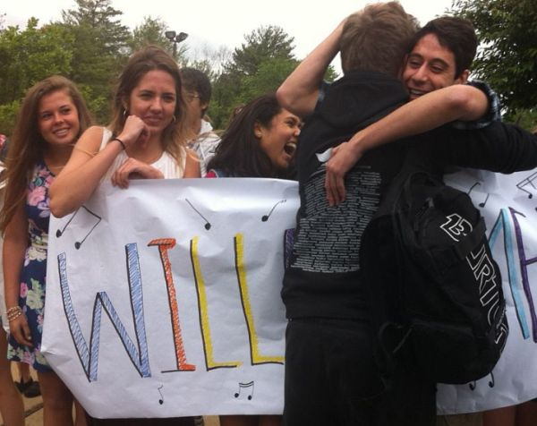
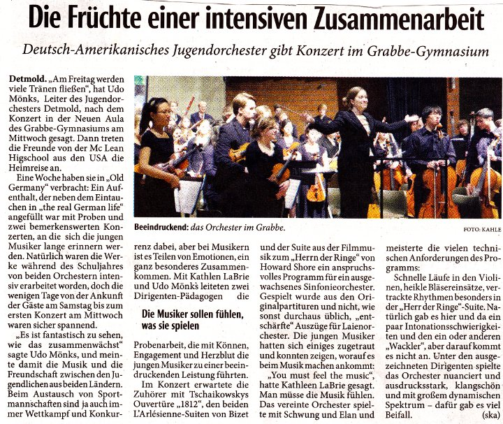
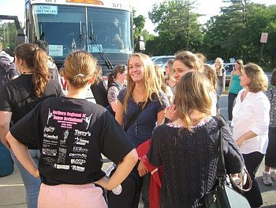
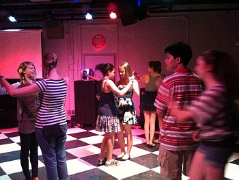

McLean-Austausch
2020: Korken knallen
Neujahrskonzert
- Videoclips der Amerikaner von allen Konzertstücken →
- Das Programm zum Neujahrskonzert am 30. Januar →
- Umfassender Bericht der Lippe News der Stadt Detmold →
- aktueller LZ-Bericht nach dem Konzert:

2019: Together

Amerika-Trip des DJO zum befreundeten McLean High School Orchestra vom 3. bis 12. April
- Videoclip: Das komplette Konzert (rund 90 Minuten) =>
- Videoclip: Wir freuen uns auf Amerka =>
- aktuelle Foto-Serien aus Amerika =>
- Videoclip: Radeln durch Washington =>
- Kontakt-Adresse zu den »Wunderbar-Events« =>
- Sponsorenkonzert und Infos zur Reise =>
von Hajo Gärtner (Text) & Sabine Hilbert-Opitz (Fotos)
Die musikalische Ernte ist kolossal: Die amerikanischen Freunde haben das gemeinsame Konzert von DJO und MLHSO ins Netz gestellt. Komplette 90 Minuten. So können die in Deutschland zurückgebliebenen Freunde, Eltern, Großeltern, Onkel, Tanten und Sponsoren der Reise dieses Highlight nacherleben. Eine umfangreiche Fotostrecke bietet einen umfassenden Einblick in die Aspektvielfalt der freundschaftlichen Begegnung. Zusammensein (»be together«) ist schön. Aber »wunderbar together« ist mehr: ein Erlebnis. Das stellten die 39 USA-Reisenden vom Detmolder Jugend-Orchester (DJO) fest. Zusammen mit dem befreundeten McLean High School Orchestra (MLHSO), das seit mehr als 20 Jahren eine Partnerschaft mit dem Detmolder Ensemble unterhält, erlebten sie Musik auf eine besonders intensive Weise. Sie übten das gemeinsame Konzert ein und führten es erfolgreich auf: Dieses Mal in der German International School und der McLean High School in Washington.
Das Besondere dieser Reise: Sie fand im Deutschlandjahr statt (die Amerikaner feiern jedes Jahr ein spezielles Nationenjahr). Deshalb durften die deutschen Gäste das Weiße Haus besuchen und den Kongress; politisch exponierte Gebäude, die normalerweise nur amerikanischen Bürgern zugänglich sind. Chorleiter Florian Wessel voller Begeisterung: »Wir danken noch einmal ausdrücklich den Förderern dieser Reise von ganzem Herzen.« Die jungen Musiker hatten einen Videoclip hergestellt unter dem Motto: »Wir freuen uns auf Amerika«, den wir an dieser Stelle gern zeigen. Aber ein ganz besonderes Schmankerl ist wohl der komplette Konzertmitschnitt in akustisch hervorragender Qualität.
2018: Carmen

Von Florian Wessel
Voller Freude begrüßen wir unsere Gäste aus Washington D.C. Gemeinsam werden das Streichorchester aus McLean und das Detmolder Jugendorchester am 31.01.2018 um 19:30 Uhr in der Neuen Aula des Grabbe-Gymnasiums ein Konzert geben. Ich leite das Konzert zusammen mit Starlet Smith.
Anhand berühmter Melodien aus Bizets komischen Oper „Carmen“ werden wir dem Publikum einen dramatischen, berauschenden und zugleich tragischen Abend darbieten, der die Personen dieser Oper in Orchesterklängen musikalisch lebendig werden lässt.
Die Orchester spielen zusammen die erste und zweite Carmensuite von Georges Bizet und das Programm wird vervollständigt durch die Carmenfantasie für Violine und Orchester, gespielt von Gina Keiko Friesicke, welche die bekannten Melodien mit Ausdeutungen und einer virtuosen Konnotation ergänzt.
Die Orchester dürfen unter der Schirmherrschaft von Jürgen Hardt, Bundestagsmitglied und Koordinator für die transatlantische Zusammenarbeit des Auswärtigen Amtes, zusammen nach Berlin reisen und werden dort in der John-F.-Kennedy-Schule ein weiteres Konzert geben. Der Austausch wird dankenswerter Weise von der Jeunesses musicales Deutschland maßgeblich gefördert.
Bericht im Fernsehen
- Aktuelle Stunde des WDR vom 30.1.2018 (Mitschnitt) [ in Arbeit ] =>
2016: romantisch
 facebook =>umfangreiche Dokumentation
facebook =>umfangreiche Dokumentation

LZ-Bericht vom 22. Januar 2016
GMD Lutz Rademacher probt mit dem Austauschorchester im Grabbe
Von Florian Wessel (Text & Fotos)
 Nach einem erfolgreichen Start der Proben des Programms mit den amerikanischen Freunden und der weggeschlafenen Müdigkeit vom Samstag hatten wir musikalisch hohen Besuch im Grabbe-Gymnasium. GMD Lutz Rademacher probte eine intensive Stunde mit den Jugendlichen des 80-köpfigen Austauschorchesters in der Neuen Aula des Gymnasiums. Aufmerksam und konzentriert folgten die Musiker seinem inspirierenden Dirigat und konnten so ihr Orchesterspiel vervollkommnen. Wir danken für diese tolle Probe!
Nach einem erfolgreichen Start der Proben des Programms mit den amerikanischen Freunden und der weggeschlafenen Müdigkeit vom Samstag hatten wir musikalisch hohen Besuch im Grabbe-Gymnasium. GMD Lutz Rademacher probte eine intensive Stunde mit den Jugendlichen des 80-köpfigen Austauschorchesters in der Neuen Aula des Gymnasiums. Aufmerksam und konzentriert folgten die Musiker seinem inspirierenden Dirigat und konnten so ihr Orchesterspiel vervollkommnen. Wir danken für diese tolle Probe!
Im Anschluss daran trainierten die Instrumentalisten in ihren Stimmgruppen unter Anleitung von erfahrenen Orchestermusikern des Landestheaters Detmold ihre Orchesterstimmen. Auch diesen fleißigen Helfern, die uns immer wieder neue Anregungen und Inspirationen geben, danken wir an dieser Stelle von ganzem Herzen. Die professionelle Anleitung ermöglicht uns, unsere volle Leistung abzurufen und über uns hinauszuwachsen.
Wir freuen uns auf weitere Proben und erinnern an dieser Stelle an die beiden bevorstehenden Konzerte:
Mittwoch, 20.01.2016, um 19:30 Uhr im Augustinum Detmold und am
Donnerstag, 21.01.2016, um 19:30 Uhr in der Neue Aula des Grabbe-Gymnasiums

Archivbild vom USA-Besuch des DJO 2015.
Die Welt zu Gast bei Freunden
Das Streichorchester der McLEAN HIGH SCHOOL kommt wieder nach Detmold
Am Samstag ist es so weit und unser befreundetes Streichorchester aus Washington D.C., das McLean High School Orchestra kommt zum Gegenbesuch nach Detmold. Voller Vorfreude auf unsere amerikanischen Mitspieler proben wir im Detmolder Jugendorchester schon das vorwiegend romantische Programm. Neben Beethovens Egmont Ouvertüre und Mendelssohns Violinkonzert in e-Moll wird als Hauptwerk in unseren beiden Konzerten Dvoraks 8. Symphonie erklingen. Als Solistin wird Rachelle Betancourt mit uns spielen, die in ihrer eigenen Schulzeit als Mitglied des McLean High School Orchestra in Detmold zu Besuch war und heute im Radio-Sinfonie-Orchester Frankfurt spielt. Geleitet werden die Konzerte von Starlet Smith, der Dirigentin des MHSO, und Florian Wessel, der im letzten Sommer die Leitung des DJOs von Udo Mönks übernommen hat.
Die Idee eines Austauschs zwischen dem Orchester der McLean High School in Washington D.C. und dem Detmolder Jugendorchester entstand 1994, als das MHSO auf einer Konzertreise in Detmold gastierte. 1998 folgte ein weiterer Besuch der Amerikaner, dieses Mal, um ein gemeinsames Konzert mit dem DJO zu geben. Seit mehr als 20 Jahren wird der Austausch nun fortgeführt und hat durch die dichte Folge der Begegnungen viele Kontakte und andauernde Freundschaften hervorgebracht.
Das Detmolder Jugendorchester und seine amerikanischen Freunde laden alle herzlich zu den beiden Konzerten ein!
Mittwoch, 20.01.2016, um 19:30 Uhr im Saal des Augustinums Detmold (Römerweg 9, 32760 Detmold),
und am Donnerstag, 21.01., um 19:30 Uhr in der Neuen AULA des Grabbe-Gymnasiums.
Der Eintritt zu beiden Konzerten ist frei.
2015: Chronik
in den USA

Das Detmolder Jugendorchester (DJO) ist zu Gast beim McLean High School Orchestra (MSHO). Steven Förster berichtet in Text und Bild über die Begegnung. Hier seine Chronik; die Fotos präsentiert Grabbe Online als Bildergalerie auf BiD-OWL.
Tag 1
Unser Grabbe auf großer Fahrt. Zumindest für 45 Schülerinnen und Schüler startete heute die Reise in Richtung Amerika. Beginnend mit einem Bustransfer gen Amsterdam - bei dem der Busfahrer seine innige Liebe zum SC Paderborn in einer Endlosschleife wiederholte - ging es nach anfänglichen Schwierigkeiten beim Einchecken in die berühmte Polonaise der Gepäckabgabe. Hier bietet es sich wirklich an, eine Lehrkraft zu sein, denn schwuppdiwupp kann man bei derart langen Warteschlangen ein paar Plätze gut machen. Und nach dem langen Stehen kam das lange Sitzen, 8 1/2 Stunden. Damit uns die Zeit nicht lang wurde, gab es einige aufheiternde Spiele. Vor allem das ,,Fotografiere den schlafenden Lehrer" wurde quasi zum Volkssport erhoben - leider wurden meine aufgenommenen Bilder aufgrund persönlicher Verbindungen in voreiligem Gehorsam gleich wieder gelöscht.
Und nach dem Sitzen kam wieder das Stehen - unterbrochen von einem als Entengang anmutenden Stop-and-Go bei der Einreisekontrolle. 2 Stunden später waren wir schon durch ... Aber nicht nur wir, sondern
gleichsam auch ein ungebetener Gast auf dem amerikanischen Staatsgebiet. Wir hatten einen Apfel mit,
quasi als illegalen Einwanderer, der leider nicht mehr zeitnah vertilgt werden konnte - und da dieser
nicht weit vom Stamm fällt, wurde auch gleich die damit erwischte Schülerin belehrt. So waren
wir froh, keine Pauke mitgenommen zu haben, denn wir bekamen zumindest eine sehr umfangreiche und in
ihrer Formulierung auch sehr nachdrücklich wirkende Standpauke umsonst geliefert.
Tiefes Durchatmen, als wir aus dem Flughafen mit guter Laune, aber ohne Apfel unseres Weges gehen konnten.
Doch bei eben diesem ersten Atemzug nahmen wir auch gleich die enorme Luftfeuchtigkeit wahr. Nach drei
bis vier weiteren Atemzügen saßen wir schon im Bus und fuhren in Richtung der McLean
Highschool. Und was sahen wir da für eine Freude - vergleichbar in seiner Ekstase wohl einzig mit der
Ankunft der deutschen Fußballnationalmannschaft nach ihrem wohl mehr als verdienten Sieg in
der Weltmeisterschaft des Vorjahres. Es wurde umarmt, es wurde geherzt und schon wurde auch gehetzt - und zwar zur ersten Probe. Total übermüdet war es ungemein schwer, sich zu konzentrieren, sich zu
fokussieren und aufrecht zu sitzen ... Doch wie muss es erst für die Schülerinnen und
Schüler gewesen sein?
Tag 2
Aufwachen und sich noch einmal im Bett umdrehen ... All dies ist möglich, denn der heutige Tag begann
etwas später. Was wie ein Traum klingt, wird hier im Land der unbegrenzten Möglichkeiten
Realität. Erst gegen 8.45 Uhr Ortszeit mussten wir am Schulgebäude aufschlagen um uns dann
stilecht mit einem gelben Schulbus uns Richtung Innenstadt zu bewegen. Zunächst stand der Besuch
des Kennedy-Centers auf der Agenda - ein unglaublich kostbar ausgestatteter Komplex für
Theateraufführungen und Opern. Wir konnten nicht nur außergewöhnliche Kunstwerke
betrachten, sondern auch einen entzückten Blick in die Logen des Präsidenten werfen ...Hier
sitzt also Mr. Obama und lauscht den künstlerischen Ergüssen der ,,freien Welt".
Bei der Führung wurde eine Ausführung unseres Guide zur Endlosschleife: KEINE FOTOS VON DER
BÜHNE ... COPYRIGHT! Eine Ansage, die in ihrer Nachdrücklichkeit und Artikulation
sicherlich auch vom Sicherheitspersonal des Weißen Hauses hätte gegeben werden
können. Umso aufgeregter wanderten unsere Blicke auf der ominösen Bühne und
sahen: nichts. Aber wohl ein Nichts mit Copyright. Selbst eine komplett leere Bühne hat hier
als Kunstwerk zu gelten ... Wir waren alle sehr sehr beeindruckt.
Danach ging es spazierend bei 29 bis 30 Grad in Richtung Georgetown. Entlang des Potomac-River flanierten
wir nicht nur in die eine und andere Lokalität, auch die ersten Geschäfte zur Ankurbelung der
amerikanischen Wirtschaft wurden von uns beehrt. Die sich anschließende Probe wurde von unseren
Schülern noch zur Übermittlung von Eindrücken genutzt, denn ohne es auch nur im
Entferntesten zu ahnen, nutzen einige von ihnen die Pausen ihres Einsatzes um - ich traue mich gar
nicht, dies mitzuteilen - um am HANDY rumzudaddeln. Dies wird sicherlich in den nächsten Tagen
ein auslaufendes Phänomen darstellen - hoffe ich zumindest.
Tag 3
Tag 3 - der Familientag. Und bemerkenswert ist vor allem die flächendeckende Rückmeldung, dass sich dies (fast) wie die eigene Familie anfühlt. Eine solche Herzlichkeit ist wirklich überwältigend und nicht als selbstverständlich zu betrachten. Für mich ging es zunächst in ein wundervoll anmutenden chinesisches Restaurant. Die Möglichkeit alles probieren zu können, was man will (oder was die Gasteltern wollen), führte uns durch ein Potpourie von delikat zubereiteten Hühnerfüßen und Dingen, die ich gerade noch als Mägen übersetzen konnte - allerdings wollte ich danach gar nicht mehr das genaue Tier hierzu in Erfahrung bringen. Mit einem stets nachgeschenkten Grünen Tee war dies aber zumindest sättigend.
Und schon ging es weiter zum Space-Museum. Eine wirklich riesig anmutende Flugzeughalle, in der nicht nur ein Stealth-Bomber zu sehen war (oder eben gerade nicht, der war aber auch sowas von gut getarnt). Neben einem Spaceshuttle erblickten wir auch die ,,Elona Gay". Der geneigte Historiker unter uns wird sicherlich mit diesem Namen etwas anfangen können... Doch der Besucher des Museums musste wohl durchaus über ein gehöriges Vorwissen verfügen, denn anscheinend war auf der Erklärungstafel kein Platz mehr, um die Folgen des ersten Atombombenabwurfes auch nur mit einem Halbsatz zu erwähnen, nun ja, auch in Amerika muss wohl gespart werden.
Tag 4
Tag 4 - ein Tag für die Vergegenwärtigung der äußerst interessanten Landesgeschichte. Nach einem reichhaltigen Frühstück führte uns der Weg zunächst in den hiesigen Deutsch-Unterricht. Unsere Schülerinnen und Schüler konnten punktuell eine große Bereicherung für die Deutschlehrer darstellen und waren doch
gleichsam etwas überrascht, dass hier in den Stunden nicht nur Handys und Laptops erlaubt sind,
sondern ebenso ein beherzter Biss ins Pausenbrot (das hier wohl dann Stundenbrot heißt) sowie ein kühner Zug aus dem mitgebrachten Wasserfläschchen widerspruchslos hingenommen wurde. Nach diesen durchaus neuen Erfahrungen ging es endlich in die Innenstadt zum langersehnten Fahrradausflug quer durch 120 Jahre Denkmalgeschichte. Es gibt anscheinend keinen besseren Weg durch Washington zu reisen, obschon etwas mehr Vorbereitung unsererseits sinnvoll gewesen wäre. Denn was fehlte, sahen wir am Ende unseres Ausflugs... Einige durften nicht nur spannende Eindrücke mitnehmen, sondern überdies auch einen gehörigen Sonnenbrand. Wenigstens können wir so für die Daheimgebliebenen nachweisen, dass wir in einer der heißesten Hauptstädte der nördlichen Hemisphäre waren.
Nach einem kurzen Lunch ging es dann wieder in den Probenteil über. Um uns das Gefühl des Vormittags zu bewahren, wurde im Auditorium anscheinend die Klimaanlage ausgestellt - oder lag das Schwitzen vielleicht an den überaus gekonnten vorgebrachten Übungsteilen? Wer weiß ...
Tag 5
Morgenstund hat nicht nur Gold im Mund, sondern auch im Ohr. Und dieses Gold bekam heute, anmutend wirkend, aus den Instrumenten des kompletten Orchesters unser Geburtstagskind Udo Mönks zum 65.
Ehrentag. Mit einem so freudigen Anlass übt es sich doch gleich noch begeisternder. Nach einigen
lobenden Worten von Seiten der Orchesterleitung schienen die Schülerinnen und Schüler
gleich ein gehöriges Stück größer zu wirken - vielleicht liegt dies aber auch an den zwischenzeitlich aufgebauten Podesten im hinteren Teil der Aula-Bühne. Folglich ist nicht nur der visuelle Eindruck noch imposanter wirkend, sondern gleichsam auch der außergewöhnliche Klang.
Nach diesen Proben ging es via Schulbus erneut in die Innenstadt. Auf der Agenda stand diesmal das im
neoklassizistischen Stil gehaltene Gebäude der ,,National Gallery of Art" - einen unglaublichen Kunstschatz beherbergend. Wir ließen Zeit und Raum hinter uns, tauchten zunächst in die frühe Renaissance aus Florenz ein (1420-1470), um abschließend bei Meisterwerken der amerikanischen Landschaftsmalerei des 19. Jahrhunderts anzukommen. Auf unserem Rundgang sahen wir mit Pinseln erschaffene Welten, gingen vorbei an den wahren Meistern einer 500jährigen Kunstgeschichte. Beginnend mit Werken von Filippo Lippi, Leonardo da Vincis ,,Ginevra de' Benci", Bellini und Titians ,,The feast of the gods" führte unser Weg durch Peter Paul Rubens Kunstschätze des Holländischen Barock. Über Rembrandt, Peter Claesz, Jan Weenix sowie Eduard Manet zogen uns abschließend die Werke von Gilbert Stuart und Thomas Cole's ,,Voyage of Life" aus dem Jahre 1842 in ihren Bann. Ein unglaublicher Gewinn für alle Teilnehmer dieses Austausches - das Leuchten in den Augen unserer Schüler wird noch sehr lange anhalten.
Nach zwei Stunden der freien Museenauswahl ging es dann per Metro ins alte Feuerwehrhaus zum gemeinsamen Abendessen. Kulinarische Höhepunkte aus Amerika, aus Asien und aus Mexiko umspielten unseren Gaumen und stärkten uns für die letzte Probenrunde ab 19.30 Uhr. Wir sind alle sehr müde,
aber auch sehr dankbar, Teil dieses wundervollen Austausches sein zu dürfen.
Tag 6
Nach erneut sehr ehrgeizigen Versuchen, den Deutschunterricht als obligatorisches Fach an der McLean
Highschool zu etablieren, kamen unsere Schülerinnen und Schüler direkt aus den
Klassenräumen in unseren schon wohlbekannten gelben Schulbus. Vorbei an einigen Monuments
wurden nochmals einige durchaus spannende Fragen gestellt. Warum ist zum Beispiel das sehr
eindrucksvolle Memorial von Martin Luther King Jr. (auf dem er in Überlebensgröße
steht) gerade in weißem und nicht in schwarzem Stein gemeißelt, hm ... Selbst unser Guide
konnte dies nicht adhoc erklären (liegt wohl an den höheren Kontrastwerten und dem
Schattenwurf bei veränderter Sonnenstellung).
Diesmal führte uns das ambitionierte Programm ins National Museum of the American Indians, wobei
hier nicht nur die Geschichte und Kultur der nordamerikanischen Ureinwohner eindrucksvoll
dargestellt wurde, sondern ebenso die südamerikanischen Völker eine breite
Würdigung erfuhren. Nach einem Spaziergang zum Capitol ging es erneut zum Museum, um die
Spezialitäten der native americans zu kosten.
Etwaige Kommunikationsschwierigkeiten bei den Treffpunkten gab es heute erfreulicherweise nicht.
Somit konnten alle Teilnehmer unseres Austausches geschlossen zur Highschool fahren und nicht der eine
oder andere Lehrer, als letztes Aufgebot wartend, einen deutlich verlängerten Aufenthalt im
Stadtzentrum verleben.
Abends wurde geprobt, geübt, verbessert, perfektioniert und alles noch einmal durchgespielt.
Gerade die unterschiedlichen Stile und individuellen Besonderheiten unserer drei Dirigenten -
Starlet Smith, Udo Mönks und Florian Wessel - bringen eine so wunderbare Melange mit sich, dass wir
das morgige Konzert kaum erwarten können.
Tag 7
Das gestrige Abendessen wurde individuell in der Stadt eingenommen, was auch zu sehr individuellen
Gesichtsausdrücken - gut eine Stunde nach Essenaufnahme - führte. Strahlten einige
Schüler mit gesättigten Mägen um die Wette, konnten andere den strahlenden Inhalt
Ihrer Mägen erneut in Augenschein nehmen. Doch mit ein bisschen Frischluft, einem beherzten Fluch
in Richtung der unterschiedlichen Gastronomien und dem Bewusstsein, sich für das Orchester auch
mit flauem Magen durchzubeißen, wurde heute Vormittag die letzte Probe angesetzt.
Zur Ablenkung gab es ab 12 Uhr die Gelegenheit für eine weitere Ankurbelung der US-Wirtschaft. In
der zwölftgrößten Mall der USA, mit mehr als 200.000 Quadratmeter
Verkaufsfläche, fanden wir mehr als 300 Geschäfte vor. Einige Neuverhandlungen mit den
heimischen Taschengeld-Finanziers werden wohl nach unserer Rückreise auf der Agenda stehen.
Hier kann man arm werden, aber nur, falls man es vorher noch nicht war. Die Zeit verrann in diesem
Konsumtempel und unser Konzert kam Stück für Stück näher... dann war es endlich
soweit... der Höhepunkt unserer Reise... der Saal füllt sich und das Licht wird immer
schwächer... das Orchester kommt, das Dirigententrio ist vor Ort, die knisternde Spannung ist
allgegenwärtig - die ersten Noten erklingen und in diesem Moment befindet man sich bereits mitten
in dem Strudel der hörbaren Impressionen. Mitgerissen, ja fortgerissen, getragen in
Sphären jenseits des Alltages. Es ist wie ein Urlaub für die Seele, ein Auftanken in der
stressigen Welt, ein Durchatmen bei aller Schnelllebigkeit der Gegenwart. Zwischen Bach und Offenbach
war das Publikum offen für neue klangliche Bäche, Flüsse, Ströme und Meere - eine
derartige Euphorie nach einem Konzert habe ich bislang noch nirgendwo gesehen. Der schier endlos
erklingende Applaus wollte nicht abebben und der Wunsch, das Konzert sofort wieder beginnen zu lassen,
war mehr als nur greifbar. Eine tiefe Freundschaft entwickelt sich durch unsere Musik - ein
Verständnis für den Anderen und erneut eine überwältigende Dankbarkeit, ein
kleiner Teil dieses äußerst wertvollen Projektes sein zu dürfen.
Tag 8
Wir freuten uns auf deutsche Brötchen, Kaffee aus der Heimat und wohlbekannte Geschmacksrichtungen
beider Marmelade ... und bekamen in der deutschen Botschaft ein typisch amerikanisches
Frühstück. Auf deutschem Boden zu sein provozierte natürlich gleich die Frage, ob hier
die Erlaubnis, Alkohol zu konsumieren, wieder von 21 auf 18 Jahre gesenkt wird - wir ignorierten
geflissentlich diese Frage, da uns eine etwaige Umsetzung einfach unvorstellbar erschien.
Spannende Fakten wurden uns hier präsentiert. Bei einer jährlichen Umfrage nach der
Beliebtheit in 20 Ländern konnte Deutschland zum vierten Mal in Folge den zweiten Rang erringen.
Deutschland wird besonders als glaubwürdiges, stabiles und innovatives Partnerland
betrachtet. Als Nachteil wurde die geringe Willkommenskultur erwähnt, ebenso die
diagnostizierten Eigenschaften, dass Deutsche kühl und nüchtern seien. Dies ist bei den
teilweise tropischen Temperaturen aber durchaus als erfreulich zu betrachten und auch wir sind sehr
dankbar, dass unsere Schüler hier die ganze Zeit nüchtern sind!
Weiter ging es mit dem Bus nach Chinatown und zum German-American-Heritage-Museum.
Seit 1607 sind mehr als 7 Millionen Deutsche nach Nordamerika ausgewandert. Nach einer Reise von mehr als
4 bis 6 Monaten versuchten diese ihr Glück im Land der unbegrenzten Möglichkeiten zu finden. Wir
hörten sehr interessante Fakten bezüglich der Deutschen in den USA. So wurde die
Unabhängigkeitserklärung bereits einen Tag vor der eigentlichen Bekanntgabe in Deutsch
formuliert. Ebenso waren eingewanderte Deutsche involviert im Bürgerkrieg, zu 90 Prozent auf der
Seite der Nordstaaten kämpfend. Sehr interessant waren auch die Tatsachen, dass im Jahr 1900 New
York die Stadt war, in der nach Berlin und Wien die meisten Menschen Deutsch sprachen und dass die
Begrifflichkeit Dollar vom deutschen Wort Taler entlehnt ist. Eine Schnitzeljagd durch das Museum
rundete diesen Programmpunkt ab. Danach gab es zwar kein Schnitzel, aber erneut ein leckeres
Mittagessen, diesmal neben dem Verizon-Center, der Heimstätte des lokalen Eishockey und
Basketballteams.
Und schon ging es Schlag auf Schlag weiter... diesmal beim Baseball. Bevor das Spiel begann, durften wir
,,Detmolder Jugendorchester" auf der Anzeigetafel lesen ... was für eine coole
Geschichte! Und es begann wirklich spannend - ohne genaue Regeln zu kennen, klatschten wir mit unseren
amerikanischen Familien. Und bei unglücklichen Entscheidungen versuchten wir ein paar
Tränchen zu quetschen. Interessant war vor allem die Pausengestaltung. Eigentlich hätte es
schon weiter gehen können, aber im live übertragenden Fernsehen war die Werbung noch nicht
vorbei. Also wartete das ganze Stadion - sensationell. Ab dem dritten Inning war unsere Aufmerksamkeit
erloschen. Wir konzentrieren uns danach nur noch auf die atemberaubende Konstruktion des Stadions. Als
wir um halb 10 auf die Uhr schauten, war es erst viertel vor 9!
2014: Dvorak
Bildergalerie =>Konzert-Plakat =>Bilder und Berichte auf der Homepage des McLean High School Orchestra =>

20 Years of Making Music together
Time flies when you’re having fun!
Von Sabine Hilbert-Opitz
Viel zu schnell ist die gemeinsame Zeit von MHSO und DJO hier in Detmold vergangen.
Es war eine intensive Woche - voll mit ganz viel Musik, Proben und einem
umfangreichen Programm: Stadtführung, Empfang beim Bürgermeister,
Schlossbesichtigung, Besuch des Geigenbauers (Danke, Herr Weiken), Besuch
des Erich-Thienhaus-Instituts der HfM mit Vorführung der Wellenfeldsynthese
(Danke, Professor Kob), Besuch des Instrumentenmuseums in der Burg Sternberg
(Danke, Herr Waidosch), Theaterführung, Fahrt nach Münster.....
Wie Ms Smith im Konzert hervorhob, war das gemeinsam erarbeitete Programm
für ein Schülerorchester sehr anspruchsvoll ( "not High School but University
level" ). Umso erfreulicher war es, zu erleben, wie sich die musikalische Qualität
von der ersten Probe bis hin zum zweiten Konzert kontinuierlich steigerte und die
gemeinsame Arbeit in zwei ganz tolle, vom Publikum begeistert aufgenommene
Konzerte mündete.
Als Dank und als Zeichen der Verbundenheit überreichte der Schulleiter des Grabbe-
Gymnasiums, Herr Klapproth, den für diesen Anlass neu geschaffenen ’Grabbe Pokal’
an die Dirigentin des McLean High School Orchestras, Ms Starlet Smith. Danach
wurde stilvoll zu "Royal Sec" angestoßen.
Höhepunkt des Freizeitprogramms war ein ,,zauberhafter" Abend im Hangar. Jens
Heuwinkel hatte keine Mühe gescheut und ein großartiges Team von Tutoren für
Einrad- und Jonglage zusammengestellt, darunter einige am Grabbe bekannte
Gesichter (schön Euch mal wiederzusehen!) aber auch zwei Einradprofis aus
England und Kanada, die extra für uns nach Detmold gekommen waren!
Der Abend begann mit einer tollen Show, in der die Profis ihr Können vorführten –
und die Freiwilligen, über die gesprungen wurde, Nerven beweisen mussten. Dann
waren alle eingeladen, sich selbst zu erproben.
Die Stimmung war die ganze Woche lang unheimlich gut. Wachsende Müdigkeit
wurde einfach ignoriert, Spaß gab verbrauchte Energie wieder zurück. Schnell
wuchsen Kontakte und Freundschaften, die abendlichen ’Nebentätigkeiten’ waren
zudem ein für amerikanische Jugendliche gänzlich ungewohntes Vergnügen.
Zurück bleiben viele schöne Erinnerungen, Freundschaften und Dankbarkeit. Thank
you all: Starlet Smith, Gretta Sandberg, MHSO students and chaperones for being
such wonderful guests and friends!! Die Jugendlichen haben die Bedeutung dieser
langjährigen Orchesterpartnerschaft so zusammengefasst :
MHSO & DJO best friends forever
Phil Rosenfelt, langjähriger Begleiter dieses Austauschs, schreibt:
We are home safely after nine days of the wonderful exchange visit of the
McLean High School Orchestra to the Detmolder Jugendorchester from the
Christian-Dietrich-Grabbe-Gymnasium in Detmold. The hosts were incredible,
the tours were very educational, and the music was magnificent--Bizet, Gilbert
and Sullivan, Dvorak, Herbert, and Mendelsohn. It has been twenty years
of incredible relationships, great music, and a chance to make the world a
smaller and friendlier place. We hope for many, more more years of a terrific
cultural exchange program!
Music's so wonderful
MHSO & DJO - 20 Years of Making Music together!
Von Tilman Coers
Eine wunderbare Austauschwoche des Detmolder Jugendorchesters mit dem McLean Highschool Orchestra liegt hinter allen Beteiligten. Eine Woche voller Musik, voller Freunschaft, voller abwechslungsreicher Erlebnisse, voller Erfolge. Ja, tatsächlich war die Woche sehr „voll“ und ging trotzdem viel zu schnell zuende.
Samstag
Gestern ist die Delegation des McLean Highschool Orchestras angekommen, zwar erschöpft und müde aufgrund des langen Fluges, aber voller Freude und Tatendrang. Die Zeit in den Familien wurde zum ersten Kennenlernen oder Wiedersehen sowie für erste Unternehmungen genutzt. Am Abend stand die erste Probe an. Wie erwartet waren die Ergebnisse noch nicht sehr überzeugend, da man sich noch in der Findungsphase befand.
Daran soll heute in einer vierstündigen Probe gearbeitet werden. Anfangs herrscht in der neuen Aula des Grabbe Gymnasiums noch keine Probenstimmung, es wird geredet, fotografiert, einige Klangfetzen von verschiedensten Instrumenten sind zu vernehmen. Als schließlich alle auf der Bühne versammelt sind und die ersten Stücke erklingen, kommt wieder Hoffnung auf. Eine deutliche Verbesserung ist zu verbuchen. Trotzdem muss noch viel passieren, Abläufe müssen verinnerlicht, Soli müssen geübt und Zusammenspiel muss gelernt werden.
Der Samstagabend ist frei, die Aktivitätsmöglichkeiten sind vielseitig. Einige nutzen die Zeit zum „Sightseeing“, der Hermann und die Externsteine sind beliebte Anlaufpunkte für die Amerikaner.
Andere treffen sich auf Partys, die deutsch-amerikanische Zusammenkunft muss schließlich gefeiert werden. Trotzdem wird die Nacht nicht zum Tag gemacht, denn morgen wartet wieder viel Arbeit auf die Gruppe.
Montag
Die Schulwoche beginnt für die Mitglieder des DJOs eigentlich so wie immer. In aller Frühe aufstehen, frühstücken und dann auf zum Unterricht. Doch wohin mit den Amerikanern? Die müssen natürlich auch aus den Federn, sie können entweder am Unterricht teilnehmen oder entspannt in der Mensa sitzen, während die Köpfe ihrer deutschen Freunde rauchen. Schon heute sind müde Gesichter zu sehen, denn gestern Abend war die gesamte Gruppe bowlen. Doch Anstrengung und Verausgabung sind immer Teil eines Austauschs, neben Probenarbeit darf natürlich auch die Zeit für gemeinsame Aktivitäten nicht zu kurz kommen.
Ein weiteres Highlight steht nach der Nachmittagsprobe an: Der Besuch der Burg Sternberg. Hier können vor allem historische Musikinstrumente bestaunt und sogar ausprobiert werden. Man führt die 50 Mann starke Gruppe durch ausgewählte Räumlichkeiten und stellt die Musikartefakte aus der Vergangenheit vor.
Auf der Rückfahrt um 21:45 Uhr werden die Lichter im Bus ausgemacht, einige wenige nutzen tatsächlich die Gelegenheit um etwas Schlaf nachzuholen, doch der Großteil scheint hellwach zu sein und unterhält sich, die gemeinsame Zeit ist schließlich knapp bemessen.
Dienstag
Der letzte Tag vor den Konzerten. Die Spannung steigt. Der Plan sieht für heute allerdings nur drei Stunden Probe vor, aber mehr Zeit bleibt neben Schule und Freizeitaktivitäten einfach nicht. Deshalb gilt es, die Vorhandene besonders gut auszunutzen. Alle Stücke müssen noch einmal „poliert“ werden, denn noch fehlt der nötige Feinschliff. Doch nach Probenende herrscht positive Stimmung und Vorfreude, die Konzerte können kommen.
Das Abendprogramm für heute wurde im Vorhinein als „secret group activity“ angekündigt, sie soll im Hangar 21 stattfinden. Dort angekommen stellt sich der Akrobat und Entertainer Jens Heuwinkel vor und präsentiert mit seinem Team Kostproben feinster Zirkuskunst. So können Kunststücke auf dem Einrad, mit dem Diabolo oder mit Devil Sticks bestaunt werden. Eine wirklich verblüffende und respekteinflößende Show!
Tatsächlich beginnt erst jetzt die eigentliche Betätigung, denn nun dürfen die Übungen nachgemacht werden. Es stehen etliche Einräder bereit, Anleitung wird durch das Team gewährleistet. Obwohl der Erfolg, einmal mit dem Einrad durch die Halle zu fahren, den meisten verwährt bleibt, ist die Stimmung ausgelassen. Man hilft sich gegenseitig, lacht und trauert mit den Freunden. Als die Zeit um 21:30 vorrüber ist, blickt man in erschöpfte, aber fröhliche Gesichter. Einige sind nur schwer von den neu erlangten Leidenschaften zu trennen. Ein gelungener Abend!
Donnerstag
Der letzte gemeinsame Tag ist angebrochen. Münster steht auf dem Programm, der Bus fährt in aller Frühe, damit in der Universitätsstadt genügend Zeit zur Verfügung steht.
Zunächst werden die Amerikaner durch die Stadt geführt und haben die Möglichkeit, ihnen so unbekannte alte Gebäude und Kunstwerke zu betrachten. In der Stadthalle gibt es sogar einen englischen Audioguide. Danach haben die „Touristen“ Freizeit, welche fast ausschließlich zum Shoppen genutzt wird. Das letzte Reisegeld wird ausgegeben, Geschenke für Freunde und Familie werden gekauft, noch scheint keine Abreisestimmung eingetreten.
Das zweite Konzert soll noch besser werden als das gestrige, obwohl dieses schon zufriedenstellend gewesen war. Vor allem die große Anzahl der Zuschauer war für alle Beteiligten wunderbar!
Für die angestrebte erneute Steigerung werden einzelne Abschnitte in der Generalprobe noch einmal verinnerlicht.
Mit Erfolg. Nach Abschluss des zweiten Konzerts sind alle einer Meinung: Das haben wir gut gemacht! Diese wird auch durch das euphorische Publikum reflektiert, welches die Orchestervereinigung großzügig beklatscht und bejubelt.
Natürlich muss der gelungene Austausch und das musikalische Ergebnis gemeinsam gefeiert werden. Von 22:00 Uhr bis 24:00 stehen den Orchestermitgliedern die Räumlichkeiten der Schule zum Essen, Trinken und Tanzen zur Verfügung. Alle haben Spaß und genießen das Zusammensein, und auch nach zwölf feiern die meisten noch weiter. Das hat sich die Gruppe aber auch wirklich verdient.
Freitag
Abschied! Als sich die Austauschschüler vor dem Bus das letzte Mal sehen, fließen einige Tränen, gute Wünsche werden ausgesprochen. Natürlich wurden im Vorfeld fleißig Adressen und Handynummern ausgetauscht, schließlich ist Amerika im Zeitalter des Smartphones längst nicht mehr unerreichbar. Jetzt heißt es warten, bis die Detmolder Delegation im Sommer 2015 nach Washington aufbricht, um den wunderbaren Austausch fortzuführen.
Ein Orchesteraustausch verbindet zwei Ziele, nämlich das gemeinsame Musizieren und das Knüpfen internationaler Freundschaften. Dass diese beiden Ziele erreicht wurden, steht außer Frage, jedoch ist dies nicht selbstverständlich. Nur durch exakte Planung, harte Arbeit und vielseitige Unterstützung kann ein solches Projekt realisiert werden. DANKE! an alle Beteiligten.
große_Bildergalerie

Videoclips =>
2013: Star Wars

40 Stunden sind ein Tag 😋
Von Sabine Hilbert-Opitz (Text & Fotos)
Großer Bahnhof beim Empfang des DJO in Washington - und schon geht's weiter im Programm: Ankommen in der Gastfamilie, Freizeit für erste Erkundungen und die erste gemeinsame Probe. Wie gut, dass dieser Tag nicht nur 24 Stunden hat. Wie immer in der fast 20-jährigen Geschichte des Orchesteraustausches freuen sich alle auf eine aufregende Zeit randvoll mit Begegnungen, neuen Erfahrungen und Musik, Musik, Musik...
Star_Wars
2012: Tschaikowsky
LZ-Bericht

Konzert

2011: Peer Gynt
Die Ankunft


Dudelsack und rollender DonnerAmerikanische Gastgeber bereiten
Grabbianern einen herzlichen Empfang
Von Christian Oesterwinter & Heike Fiedler (Text/Fotos)
Wir sind gut und pünktlich in Dulles Airport in Washington gelandet und nach ungefähr zwei Stunden waren auch unsere Einreiseformalitäten erledigt. Mit dem Bus ging es dann zur McLean Highschool, wo uns unsere Gastgeberfamilien mit Dudelsackmusik und deutsch geschriebenen Plakaten erwarteten. Einige Gäste und Gastgeber sind schon alte Bekannte, die meisten kannten sich aber noch nicht oder erst nur per Email. Es ist für uns alle ein langer Tag gewesen, schließlich waren wir ja seit 3 Uhr morgens auf, und als wie in McLean ankamen, war es nach deutscher Zeit wohl 9 Uhr abends. Aber in der freudigen Aufregung der Begegnung mit unseren Gastfamilien war alle Müdigkeit vergessen. Heute geht es um 11 Uhr in die Stadt. Es ist der Tag vor Memorial-Day; Motorradfahrer aus allen Staaten der USA treffen sich in Washinton zum ,,Rolling Thunder". Abends kommt der spannende Augenblick der ersten gemeinsamen Orchesterprobe. Beginn mit einer Sequenz aus dem 4. Satz von Beethovens c-Moll-Symphonie.
Heute Morgen: Rolling Thunder auf der Straße. Halb Washington war gesperrt, denn die Byker ritten ein. Mit riesigen Fahnen geschmückte Harleys, Hondas, Kawas, nichts unter 1000 ccm, kamen den Hügel, auf dem Arlington National Cemetary liegt, herunter über die Washington Bridge gedonnert. Ursprünglich einmal als Protest gegen das Vergessen der Kriegsveteranen gedacht, hat sich Rolling Thunder zu einem Spektakel am Vortag von Memorial, dem Tag des Gedenkens der Gefallenen aler Kriege, entwickelt.
Kapitol und Konzert
- Homepage des McLean Highschool Orchestra =>
- Bildbericht der Ankunft und des ersten Tages =>
- Videoclips:
- Probenblitzlichter (3:35 min)The Typewriter (2:17 min)Fluch der Karibik (6:22 min)Beethoven Number 5 (9:47 min)Bildergalerie (57 Fotos)

They did it!
Stichtag 3. Juni 2011 - das Konzert
Von Heike Fiedler (Text & Fotos)
Die Morgenstunden des Konzerttages verbrachten die Schülerinnen und Schüler des Grabbe-Gymnasiums im Newseum, das die Geschichte der Nachrichtenvermittlung durch Zeitung, Telegrafie, Radio, Fernsehen und Internet zum Thema hat und gleichzeitig einen Rückblick auf wichtige Ereignisse der amerikanische Geschichte bietet, da es deren Medienwirksamkeit darstellt. Auch der Stellenwert der Medien in Zusammenhang mit der Verfassung wird in der Ausstellung thematisiert.
Viele der jungen Musiker erklärten, dass sie die Fotos der Pulitzer-Preis-Gewinner der letzten Jahrzehnte am meisten beeindruckt habe. Seinen Abschluss fand der Besuch Downtown in der Union Station aus dem Jahre 1907 mit ihrer imposanten Halle und den Statuen, die nach römischen Vorbild erstellt wurden.
Der Nachmittag galt der Vorbereitung auf ein gemeinsames Konzert, das 2011 German American Exchange Concert, ein gemeinschaftliches Projekt des McLean High School Orchestras unter der Leitung von Katie O’Hara LaBrie und des Detmolder Jugendorchesters unter der Leitung von Udo Mönks. Das Konzert, das um 19 Uhr begann, fand mit Unterstützung des Goethe-Institutes und des Bundesministeriums für Familie, Senioren, Frauen und Jugend im Craighill S. Burks Auditorium in der McLean High School statt. Das anspruchsvolle Programm beinhaltete Andersons The Typewriter, Borodins In the Steppes of Central Asia, Griegs Concerto in A Major for Piano and Orchestra, Op 16, Movement, Beethovens Symphony No. 5 in C und Badelts Pirates of the Carribean und erntete Standing Ovations vom Publikum. Sie haben es geschafft! They did it! Und nicht nur das, sie waren großartig. Thank you McLeanies! Thank you Grabbies!
Im Rahmen verschiedener Dankesreden wurde insbesondere der langjährige Enthusiasmus und Einsatz „unserer“ Frau Hilbert-Opitz gelobt, durch deren engagierte und unermüdliche Arbeit alles Erreichte dieser Kooperation erst möglich wurde. Der Tenor lautete „Thank you, Sabine Hilbert-Opitz!“.
* * * * *
Die Vorgeschichte
34 Grad Celsius und ein leeres Grab
Busfahrten, Besichtigungen, Shopping Center, Pool Party und fünfstündige Orchesterproben
Von Heike Fiedler (Text & Fotos)
Unerschrocken, bei 34 Grad Celsius und trotz Ausfalls der Klimaanlage im gelben landestypischen Schulbus, machte sich das Detmolder Jugendorchester auf zum Capitol und konnte sich einen Eindruck von der morgendlichen Verkehrsdichte auf den Einfallsstraßen in der US-amerikanischen Hauptstadt machen. Dort besuchten wir die der Öffentlichkeit zugänglichen Räume, die auch Staatsbesuchen dienen, und konnten uns dort von der weittragenden Akustik überzeugen. Wir sahen das für George Washington vorgesehene Grab in der Krypta und fanden heraus, warum er nicht im Capitol, sondern auf seinem geliebten Anwesen Mount Vernon seine letzte Ruhestätte gefunden hat. Danach fanden Proben statt und abschließend gönnten sich die jungen Musiker einen Besuch im bekannten und unter den Jugendlichen sehr beliebten Tyson`s Corner Shopping Center.
Der Mittwoch war mit Probeblöcken von insgesamt fünf Stunden, Museumsbesuchen auf der National Mall und einem Abendessen mit dern McLeanies in einem chenisischen Restaurant gut gefüllt. All das bei hochsommerlichen Temperaturen von 34 Grad Celsius.

Das Ziel war am folgenden Tag das Smithonian National Air and Space Museum - Steven F. Udvar-Hazy Center - mit seiner beindruckenden Sammlung der unterschiedlichsten Flugkörper. Unerreicht der Blick aus dem Tower. Nach den nachmittäglichen Proben lud das McLean High School Orchester die Musiker des Jugendorchesters in das Old Firehouse zur Tanzstunde, die begeisterten Zuspruch fand und bald brillierten die Schülerinnen und Schüler gemeinsam in Salsa und ChaCha. Der gelungene Ausklang eines Tages voller Eindrücke und Erlebnisse!Videoclips
The_Typewriter
Fluch der Karibik
Beethoven_Number_5
2010: Gade und Gump
- Langer Videoclip vom gemeinsamen Konzert (6:27) =>
- Bildergalerie vom gemeinsamen Konzert am Mittwoch =>
- Bildergalerie auf der Website der McLean High School =>
- Umfangreiche Bildergalerie von Sabine Hilbert-Opitz =>
- LZ vom 3. Februar 2010: Mit Jürgen Rüttgers über den Atlantik =>
- LZ vom 5. Feburar 2010: Begeisterung über das gemeinsame Konzert =>
- Bericht auf der Website der Deutschen Botschaft in Amerika =>
- Videoclips auf YOUTUBE, gedreht von den amerikanischen Gästen (Seite downscrollen) =>

Videoclip
Reise nach Washington

Im Schneesturm
Arnold Schwarzenegger, Gouverneur von Kalifornien, am Telefon
Von Udo Mönks (Text und Fotos)
Montag, sehr früh. Die Anreise per Bahn von Detmold zum Flughafen Frankfurt ist kein Problem für Frühaufsteher. Nur in Herford in den ICE umsteigen, dann kann man bis zum Terminal 1 durchfahren.
Dort in der ,,Business Lounge" erkennt man die Mitreisenden (insgesamt etwa 30 Personen, davon 15 Journalisten) an den von der Staatskanzlei zugesandten Ansteckern mit Namen und Funktion.
Unser Ministerpräsident begrüßt alle persönlich mit Handschlag. Abflug planmäßig.
In Washington kommt dann abends schon die Wetternachricht: Schneesturm am Dienstagabend, Flughäfen schließen dann, die Schulen bleiben bis zum 16. Februar dicht!
Es wird diskutiert, gleich am nächsten Tag nach Kalifornien weiter zu fliegen. Zu spät: Alle Flüge sind bereits ausgebucht. Das Team richtet sich auf den Verbleib in Washington ein.
Dienstag, 9. Februar. Also kleines Programm: Gespräche mit Regierungsvertretern führt Herr Rüttgers, die Journalisten empfangen ihn nach seiner Rückkehr mit Fotoapparat und Kameras. Gesprächsrunde mittags mit dem Botschafter, Einladung zum Essen/Empfang abends.
Die Fahrt zur Deutschen Botschaft ist recht abenteuerlich. Der Schneesturm setzt tatsächlich ein. und was für einer!
Beim Empfang treffe ich Mrs Jackson, die Schulleiterin der McLean High School. Eine herzliche Begrüßung, ein kurzes Gespräch, eine Einladung zum Besuch 2011. Gut!
Ach ja: Das Essen war lecker, der Wein aus Baden.
Nachts tobt der Schneesturm ums Hotel. Am Mittwochmorgen wagen sich die Mutigen zum German American History Intitute - und bleiben auf der Rückfahrt in einer Schneewehe stecken. Die Strecke vom Hotel dorthin war eigentlich kurz. Man hätte auch laufen können - aber in Halbschuhen?
Herr Rüttgers schiebt den Bus wieder frei. Der Busfahrer hilft mit Vollgas. Spinning wheels! Der Film und die Fotos gehen durch die Fernsehnachrichten in ganz Deutschland.
Nein, der freundliche Schieber neben unserem Ministerpräsidenten ist ein junger Mann von der Security! Ich bin im Hotel geblieben und habe mit den McLeanern telefoniert.
Aber selbst meine Tochter glaubt ihren Vater am Bus erkannt zu haben!?!
Der Mittwoch klingt mit einem Abendessen im Hotel aus. Die Journalisten freuen sich über ein ,,Kamingespräch" mit Herrn Rüttgers. Ein sehr persönliches Gespräch über alle möglichen Themen der Landes- und Bundespolitik. Oft heißt es: Das bleibt aber hier unter uns!
Es steht jetzt fest: Sobald der Flughafen wieder eröffnet, werden wir fliegen, und zwar nach Frankfurt zurück! Arnold Schwarzenegger wird nur telefonisch kontaktiert. Er lässt grüßen, sagt der Ministerpräsident.
Donnerstag: Strahlend blauer Himmel! Die Sonne lacht über einer glänzenden weißen Pracht. Für das Frühstück hat sich unser Freund Phil Rosenfeld angesagt. Gemeinsam mit dem für die inhaltliche Abstimmung zuständigen Vertreter der Staatskanzlei erörtern wir drei die Absichten und Grundzüge der Obama-Administration. Die Schulpolitik der 50 Bundesstaaten der USA soll vereinheitlicht werden. Dazu lockt die Bundesregierung mit Geld ... Uns kommen Parallelen zur Schulpolitik in Deutschland in den Sinn.
Das Gespräch wird später mit Herrn Rüttgers und zwei Staatssekretären fortgesetzt. Während unser Ministerpräsident einen Termin im Weißen Haus wahrnimmt, tritt die Presse in die ,,Schulrunde" und befragt nach einer einleitenden Information die amerikanischen Vertreter. Zum Abschluss wird das Austauschmodell von MHSO und DJO lobend erwähnt.
Jetzt noch einen kleinen Imbiss, dann geht es zum Flughafen. Die Hauptstraßen sind geräumt. Vor dem Hotel traue ich meinen Augen nicht: Eine ausgewachsene Planierraupe auf Ketten schiebt die Kreuzung frei! Ein ,,normaler" Schneeschieber hätte es doch auch getan, aber so etwas sehen wir erst am Flughafen im Einsatz!
Mit mehrstündiger Verspätung fliegen wir etwa um 20.00 Uhr Ortszeit los und erreichen Frankfurt gegen 11.00 Uhr MEZ. Unser Ministerpräsident verabschiedet sich vorbildlich von jedem Einzelnen seines Reiseteams. Gut! Er holt seinen Koffer selber vom Band - das hätte ich so nicht erwartet.
Muss ich über die Bahnfahrt nach Detmold berichten? Dass die ICEs alle in Kurzform gefahren werden? Dass sie alle total überfüllt sind? Dass ich nach langem Stehen endlich einen Sitzplatz ergattern kann? Dass der Zug wegen technischer Probleme langsamer fährt und die Verspätung immer größer wird ....
Gegen 17.00 Uhr bin ich wieder zu Hause. Es hat geschneit in Detmold!! Na sowas!
Dann werde ich meine Schneewette in Kloster Brunnen ja wieder einmal gewinnen!
2009: American Feeling
Rollkoffer und Rolling Thunder
Tagebuch einer musikalischen Amerika-Reise
Von Maximilian Weiß
Das Detmolder Jugendorchester hat eine sehr schöne und ereignisreiche Reise in die USA hinter sich gebracht. Im Austausch mit dem Jugendorchester der McLean-Highschool, der wenn möglich jährlich am Laufen gehalten wird, waren diesmal wieder die Detmolder zu Besuch in Gastfamilien aus McLean, einem Vorort von Washington DC. Neben den Proben für das gemeinsame Konzert, das am Donnerstag, 28. Mai 2009, in der Schulaula stattfand, standen viele gemeinsame Aktivitäten rund um Washington auf dem Programm, darunter auch Klassenbesuche in der Highschool. Das Jugendorchester unter der Aufsicht des Dirigenten Udo Mönks und den beiden Begleitpersonen Frau Hilbert-Opitz und Frau Hohrath nimmt viele Eindrücke, ein bisschen ,,American-Feeling" und vor allem den Kontakt zu den vielen netten Menschen, die uns dort aufgenommen haben, also die Orchestermitglieder und Gastfamilien mit Eltern, Geschwistern etc., mit nach Hause. Unser besonderer Dank gilt der tollen Organisation auf amerikanischer Seite, die von Eltern übernommen wurde, und der Orchesterleiterin des MHO (McLean Highschool Orchestra), Mrs. Gretta Sandberg, die das Orchester zum Ende dieses Schuljahres abgibt und die diesen Austausch vor vielen Jahren in die Wege leitete.
Donnerstag, 21. Mai, halb zwölf Uhr nachts
Hier beginnt unsere Reise in das Land der unendlichen... naja, Sie wissen schon. Aber auch für amerikanische Verhältnisse ist es sicherlich kein selbstverständliches Ereignis, dass sich um kurz vor Mitternacht ein 50-Mann starke Gruppe mit Rollkoffern in der Hand um einen Reisebus schart, der sich in diesem Fall auf dem Kronenplatz befindet. Doch handelt es sich um eine notwendige Vorsichtsmaßnahme, denn unser Flieger startet in Frankfurt um halb acht - morgens. Also fahren wir mit etwas Verspätung - es muss sich ja noch von den Eltern, Freunden, Oma und Opa verabschiedet werden - los, um dann ein bisschen Wartezeit am Terminal in Frankfurt verbringen zu können. Wir fliegen über Paris und unsere Fluggesellschaft heißt AirFrance - was im Lichte aktueller Ereignisse einen bitteren Nachgeschmack hat. Jedenfalls heißt unser Flug AF028, den wir um Viertel nach zehn starten und - Wunder der Zeitumstellung - um halb eins am selben Freitag in Washington beenden. Leider hinkt der menschliche Körper diesem Wunder noch etwas hinterher, weswegen wir die acht Stunden Flug über den Atlantik leider trotzdem in unseren Knochen haben. Nach Absolvierung amerikanischer Sicherheitsmaßnahmen, inklusive eines persönlichen Gesprächs mit einem Sicherheitsbeamten, findet der Bustransfer zur Highschool statt, wo gleich die Gastfamilien warten und uns in Empfang nehmen, wodurch wir den Rest des Tages mit einer ersten Kontaktaufnahme - ein paar kennen sich auch schon von vergangenen Austauschen - verbringen. Manche nutzen diesen Nachmittag noch, um sich in der Einkaufsmeile Tysons Corner zu verabreden - andere legen sich erstmal ins Bett und schlafen.
Wochenende 23. + 24. + 25. Mai
Drei Tage Wochenende? Richtig, denn wie so oft, wenn wir nach Amerika fahren, treffen wir zum Zeitpunkt eines Nationalfeiertages, des ,,Memorial Day", ein, an dem der im Vietnam-Krieg gefallenen Soldaten gedacht wird und die Kriegsveteranen zu ihren Ehren kommen. Am Samstag nach unserer Ankunft schlafen wir allerdings zunächst aus oder nutzen den Morgen anderweitig. Denn erst um zwölf Uhr mittags (sechs Uhr abends deutscher Zeit) beginnt unsere erste Probe zusammen mit dem McLean Highschool Orchestra. Dieses besteht eigentlich nur aus Streichern, weswegen sich das vordere Feld des Orchesters nun mindestens verdoppelt hat. Die Bläsergruppe im Hintergrund muss aber nicht ganz ohne amerikanische Unterstützung auskommen, denn es haben sich noch Schüler der Highschool gefunden, die Fagott, Posaune und Horn spielen können. Nach Ende der Probe um drei Uhr erwacht in den Verantwortlichen langsam die Erkenntnis: Die Stücke sind schwer... brauchen wir vielleicht sogar noch Verstärkung? Noch in dieser Nacht werden erste Telefongespräche geführt...
Doch diese spannenden Vorgänge geschehen ganz unter Ausschluss der Orchestermitglieder, die sich währenddessen in ihren Gastfamilien gestärkt haben und nun bereit sind, sich im Ausüben des ,,Swing Dance" zu probieren. Dieses steht nämlich abends um acht Uhr auf dem Programm, und so betreten wir den ,,Spanischen Tanzsaal" inmitten des Glen Echo Parks, um den Anweisungen eines Tanzlehrers Folge zu leisten. Bis maximal um zwölf Uhr wird wahlweise getanzt oder sich auf den Bänken im Park unterhalten.
Be,,swing"t von dieser Erfahrung machen wir uns am nächsten Tag auf nach Washington DC, um das Spektakel des ,,Rolling Thunder" (,,rollendes Gewitter") zu bestaunen. Dieser Name ist historisch mit dem Vietnam-Krieg verbunden und bedeutet heutzutage, dass sich zahlreiche Motorrad-Freaks auf ihre Harleys setzen und auf den Straßen Washingtons gen Stadtmitte donnern. Weil der Strom von begeisterten ,,"Rolling Thunders" nicht abreißen will, haben wir Schwierigkeiten, uns fortzubewegen, weil wir kaum eine Straße überqueren können, aber schließlich gelangen wir doch zu den zahlreichen Denkmälern, darunter das berühmte Lincoln-Memorial, die wir in Kleingruppen besichtigen. Danach geht es auf zu einer ,,Pool Party" im ,,Highlands Swim Club", einem Freibad, wo wir auch essensmäßig am Barbecue versorgt werden. Angrenzend gibt es sogar ein paar Tennisplätze, auf denen wir uns vergnügen können, und so lernen wir uns in lockerer Atmosphäre und bei toller Rundum-Versorgung der Organisatoren immer besser kennen.
Am Montag ist dann der eigentliche "Memorial Day", weswegen unsere Gastgeber weiterhin keine Schule haben. Dennoch müssen sie, wie wir alle, um zehn Uhr zur Probe in der Schulaula antreten. Und da kommt es ans Licht: Die Verantwortlichen haben tatsächlich Verstärkung angefordert, die sich bereits im Anflug befindet. Bestandteile der Detmolder Delegation, die das Ruder noch herumreißen soll: Michi, der so dringlich vermisste Wundergeiger, Herr Mönks' Ass im Ärmel, und seine Begleitperson, die keine Kosten und Mühen scheuende Frau Hohrath. Nach einer Probe, die noch einmal allen die Dringlichkeit dieser ungewöhnlichen Maßnahme vor Augen führt, legen wir die Instrumente nieder und machen uns auf zu einem Picknick, das allerdings nicht im Great Falls Park stattfinden kann - dorthin wollen so viele, dass sich ein langer Stau gebildet hat - sondern eben in einem angrenzenden Park. Nachdem sich dort die meisten im Schatten der Bäume ausruhen und ein paar wenige beim Fußballspielen verausgaben trennt sich die Gruppe mal wieder: Während die einen zum Schlittschuhlaufen fahren, steht für die anderen ein Besuch in der Mall auf dem Programm. Hier nehmen wir denn auch unser schmerzlich vermisstes Mitglied Michi mit Freuden in Empfang. Seine Version der Geschichte - er hätte noch bei einem Probenwochenende eines anderen Orchesters dabei sein müssen, und überhaupt sei diese Aktion schon seit langem geplant gewesen - kaufen wir ihm natürlich nicht ab.
Dienstag, 26. Mai
ist der erste Schultag auf dieser Reise! Das frühe Aufstehen - die Schule beginnt um 20 nach sieben - scheint einigen Amerikanern schwerer zu fallen als ihren deutschen Gästen. Wir erhalten die Erlaubnis, mit unseren "Hosts" deren Unterricht zu besuchen, solange es uns interessiert. Falls nicht, können wir in einem gemeinsamen Aufenthaltsraum die Zeit bis zur ersten Probe um neun Uhr totschlagen. Langsam kristallisieren sich nun die einzelnen Stücke heraus, und nach einer Mittagspause von halb zwölf bis halb drei widmen wir uns auch am Nachmittag der Musik. Den Abend gestalten wir unterschiedlich, manche steuern das beliebte Ziel Tysons Corner an, um dort etwa einen Film zu sehen, andere gehen mit ihren Familien Essen, usw.
Mittwoch, 27. Mai
Während unsere Gastgeber wieder im grauen Schulalltag gefangen sind, machen wir Detmolder einen Ausflug nach Baltimore in den US-Staat Maryland, womit wir immerhin schon den zweiten US-Staat (nach Virginia) besuchen. Nachdem wir dort angekommen sind, sehen wir uns das National Aquarium direkt am Hafen an, das unter anderem eine Delphin-Show (die wir allerdings nur vom "Beckeninneren" aus beobachten können) und ein Stück nachgemachten Tropenwald bereithält. Warenhäuser und Buchhandlungen sowie ein "Hard-Rock-Café" an der Hafenpromenade laden zu weiteren Besichtigungen und Einkäufen ein, bis wir schließlich die Rückreise antreten und pünktlich zur Probe in McLean um halb drei parat stehen. Diesmal musizieren wir mit kleineren Unterbrechungen bis neun Uhr durch, und das nicht ohne Grund, denn der
Donnerstag, 28.Mai ist bereits unser Konzerttag! Wieder haben wir die Gelegenheit, die Amerikaner in ihren Klassen zu besuchen. Wer das nicht will, sieht sich im Aufenthaltsraum Filme an, darunter passenderweise "Grease", das Musical, dessen bekannte Melodien wir in einem Medley als Zugabe spielen. Nach der ersten Probe am Vormittag gibt es aber auch noch eine andere interessante Sendung zu sehen: In den täglichen TV-News der Schule, von Schülern moderiert, preisen Christoph und sein "Host" Bobby unser gemeinsames Konzert an diesem Abend, sieben Uhr 30, an.
ist bereits unser Konzerttag! Wieder haben wir die Gelegenheit, die Amerikaner in ihren Klassen zu besuchen. Wer das nicht will, sieht sich im Aufenthaltsraum Filme an, darunter passenderweise "Grease", das Musical, dessen bekannte Melodien wir in einem Medley als Zugabe spielen. Nach der ersten Probe am Vormittag gibt es aber auch noch eine andere interessante Sendung zu sehen: In den täglichen TV-News der Schule, von Schülern moderiert, preisen Christoph und sein "Host" Bobby unser gemeinsames Konzert an diesem Abend, sieben Uhr 30, an.
In diesem Sinne proben wir auch noch fleißig weiter, und damit die steigende Spannung nicht auf einen leeren Magen trifft, veranstalten die Organisatoren unter eifriger Mitwirkung von allen beteiligten Eltern um sechs Uhr ein "Pot Luck Dinner" in der Cafeteria der Schule, ein üppiges Büffet mit zahlreichen Gerichten, Vor- und Nachspeisen, die die Familien selbst zubereitet haben. Unter diesen guten Vorzeichen wird das Konzert, das wir vor ordentlich besetzten Rängen spielen, tatsächlich ein großer Erfolg. Besonders die Verabschiedung von Mrs Sandberg, der die DJO-interne Boygroup mit einer tollen Performance das Lied "Total egal" darbietet, sorgt für viel Emotion und reichlich Ovationen. Außerdem überreichen uns die McLeaners zu unserer Überraschung jedem von uns ein T-Shirt, auf dem die beiden Orchester in elegantem Design verknüpft sind. Nach dem Konzert kehren wir erleichtert und erschöpft in unsere Gastfamilien zurück.
Freitag, 29. Mai
Auch an diesem Morgen steht es uns frei, Klassenbesuche mit unseren Gastgebern zu machen. Um neun Uhr trennen wir uns allerdings von ihnen, um in einen stilechten gelben Schulbus zu steigen und das "John F. Kennedy Center" zu besuchen. Dieses Veranstaltungsgebäude, in Gedenken an seinen Namensgeber errichtet, beinhaltet, wie wir bei einer Führung erfahren, mehrere Theater für Konzert-, Theater- und Musicalaufführungen, von denen wir teilweise auch die Präsidentenloge ansehen können. Außerdem kann man Geschenke verschiedener Nationen in Form von Kunstwerken bestaunen, wie etwa das "japanische Zimmer".
 Danach fährt uns der Bus in das Zentrum von Washington DC, wo ein Teil der Gruppe das "International Spy Museum" besucht, in dem es über Bond-Spielzeuge bis zu Biographien von echten Spionen einiges zu entdecken gibt, während sich der andere Teil frei in der Hauptstadt bewegt und sich andere Museen ansieht, wie das "National Museum of Natural History", das "National Air&Space Museum" oder das "National Museum of American History", um nur einige zu nennen. Schließlich trudeln wir langsam an unserem Treffpunkt, dem "Art Sculpture Garden", ein, wo wir uns um fünf Uhr gemeinsam mit einigen dazugestoßenen Amerikanern den "Young Lions" Jazz unter freiem Himmel anhören. Leider ist der Schauplatz zu diesem Zeitpunkt nicht so optimal gewählt, den immer wieder regnet es ein wenig. Poetisch betrachtet scheint der Wettergott nicht übersehen zu haben, dass dies schon unser letzter voller Tag in Amerika ist und vergießt ein paar Abschiedstränen... dass der Abschiedsschmerz allerdings binnen weniger Minuten - die Gruppe befindet sich schon auf dem Weg zu einer nahegelegenen Metrostation - sintflutartige Züge annimmt, hätte keiner erwartet. In kurzer Zeit sind die meisten von uns klatschnass und rennen mit ihren im Wasser schwimmenden Füßen zum nächsten Unterstand. Ohne, dass jemand noch einen Überblick hätte, kommen wir in kleinen Grüppchen an der Metrostation an und treffen nach und nach an der Station "West Falls Church" ein, wo uns unsere Gasteltern abholen und nach Hause fahren. Wir ziehen uns schnell um, denn bereits um sieben Uhr beginnt die Abschiedsfeier - "Farewell Party" - im "Old Firehouse". Neben Billardtischen und einer XBox mit "Guitar Hero" kriegen wir auch Pizzen serviert, mit denen wir uns stärken um uns dann auf der Tanzfläche austoben. Nach einem weiteren großartigen Konzert unserer Boygroup - wir sind stolz, dass wir sie haben - feiern wir noch lange weiter.
Danach fährt uns der Bus in das Zentrum von Washington DC, wo ein Teil der Gruppe das "International Spy Museum" besucht, in dem es über Bond-Spielzeuge bis zu Biographien von echten Spionen einiges zu entdecken gibt, während sich der andere Teil frei in der Hauptstadt bewegt und sich andere Museen ansieht, wie das "National Museum of Natural History", das "National Air&Space Museum" oder das "National Museum of American History", um nur einige zu nennen. Schließlich trudeln wir langsam an unserem Treffpunkt, dem "Art Sculpture Garden", ein, wo wir uns um fünf Uhr gemeinsam mit einigen dazugestoßenen Amerikanern den "Young Lions" Jazz unter freiem Himmel anhören. Leider ist der Schauplatz zu diesem Zeitpunkt nicht so optimal gewählt, den immer wieder regnet es ein wenig. Poetisch betrachtet scheint der Wettergott nicht übersehen zu haben, dass dies schon unser letzter voller Tag in Amerika ist und vergießt ein paar Abschiedstränen... dass der Abschiedsschmerz allerdings binnen weniger Minuten - die Gruppe befindet sich schon auf dem Weg zu einer nahegelegenen Metrostation - sintflutartige Züge annimmt, hätte keiner erwartet. In kurzer Zeit sind die meisten von uns klatschnass und rennen mit ihren im Wasser schwimmenden Füßen zum nächsten Unterstand. Ohne, dass jemand noch einen Überblick hätte, kommen wir in kleinen Grüppchen an der Metrostation an und treffen nach und nach an der Station "West Falls Church" ein, wo uns unsere Gasteltern abholen und nach Hause fahren. Wir ziehen uns schnell um, denn bereits um sieben Uhr beginnt die Abschiedsfeier - "Farewell Party" - im "Old Firehouse". Neben Billardtischen und einer XBox mit "Guitar Hero" kriegen wir auch Pizzen serviert, mit denen wir uns stärken um uns dann auf der Tanzfläche austoben. Nach einem weiteren großartigen Konzert unserer Boygroup - wir sind stolz, dass wir sie haben - feiern wir noch lange weiter.
Abfahrt- und flug, 30. + 31. Mai
Wenn wir um zwölf Uhr mittags an der Schule zusammenkommen, geht für uns eine ereignisreiche Woche zu Ende. Die Verabschiedung von den Gastfamilien dauert natürlich viel länger als erwartet - aber wir lassen uns auch von einem drängelnden Busfahrer nicht hetzen. Ein Abschiedsfoto noch vor dem "Rock" - dem Stein, den die McLeaners jedes Mal mit den deutschen Nationalfarben bemalen, wenn wir da sind - und dann ist es schließlich Zeit, in den Bus einzusteigen. Hier und da fließen ein paar Tränen, weswegen wir nur hoffen, dass wir die Amerikaner schon nächsten Februar wieder bei uns in Empfang nehmen können!
 Die Reise zurück verläuft unspektakulär, dauert aber natürlich wieder seine Zeit - um halb zwei am Nachmittag (deutscher Zeit!) am Sonntag, den 31. Mai, kommen wir endlich am Kronenplatz an und werden von unseren Familien in Empfang genommen. Nicht nur der Jet-Lag, den wir in den nächsten Tagen zu spüren bekommen, wirkt nach, sondern auch der Kontakt zu unseren tollen Gastgebern, der dank Facebook glücklicherweise nicht abreißt.
Die Reise zurück verläuft unspektakulär, dauert aber natürlich wieder seine Zeit - um halb zwei am Nachmittag (deutscher Zeit!) am Sonntag, den 31. Mai, kommen wir endlich am Kronenplatz an und werden von unseren Familien in Empfang genommen. Nicht nur der Jet-Lag, den wir in den nächsten Tagen zu spüren bekommen, wirkt nach, sondern auch der Kontakt zu unseren tollen Gastgebern, der dank Facebook glücklicherweise nicht abreißt.
2008: südlicher Flair
Videoclip
Proben
Vorbereitung im Sauerland
Das Jugendorchester hat ein Wochenende mit Proben im Sauerland im bekannten Kloster Brunnen verbracht. Auf dem Übungsprogramm stand die Sinfonie Nr 4, die ,,Italienische", von Mendelssohn.
Natürlich kam bei aller Arbeit der Spaßfaktor nicht zu kurz: Tischtennis- und
Kickerturniere füllten die Pausen und die Abende, berichtet Musiklehrer und Musik-Coach Udo Mönks. Das Training gelte den Konzerten im Januar, wenn das Orchester der McLean Highschool aus USA zum Besuch ans Grabbe kommt.
Video.Google
2007: McLean High School
- zur Bildergalerie (alle Fotos) =>
- Das große Abschiedsfoto =>
- Website des McLean High School Orchestra =>

Texte und Fotos von
Christian Oesterwinter (USA)
arrangiert und produziert von
Hajo Gärtner (Detmold)
Die lange Anreise
Von Christian Oesterwinter
(auf einer amerikanischen Tastatur)
Ein bisschen steckt er uns allen immer noch in den Knochen, der lange
Tag gestern. Die Busfahrt nach Frankfurt verlief ja noch gemütlich,
für das Einchecken blieb Zeit genug, aber in Paris wurde es ein
bisschen hektisch. Sofort am Flugzeug wurden wir von Flughafenpersonal
abgefangen, denn alle, die Paris nur als Zwischenstation nach Washington
benutzten, mussten in einem Eilmarsch der uns Kilometer lang vorkam,
durch das Gebäude gelotst werden, um rechtzeitig den Flug nach Amerika
zu erreichen. Dann 8 Stunden Flug, unter uns nichts zu sehen als
langweilige Wolken, bis endlich Labrador auftauchte. Der Flug folgte der
Ostküste Kanadas und der Neuenglandstaaten, bei New York ging es
merkbar nach unten, Manhattan war gut zu sehen. Bald danach Beifall im
ganzen Flugzeug, die Landung war einigermaßen sanft ausgefallen. Nur
noch die Einreisekontrolle! Nur ist gut. Mit einem Video, das wir in der
im Schneckentempo vorankommenden Warteschlange mindesten 5 Mal genießen konnten, wurde uns erklärt, die Einreiseformalitäten seien „as easy as one, two, three“. Waren sie aber nicht. Wir hatten auf den
Einreisepapieren, die wir schon im Flugzeug ausgefüllt hatten, die
Hausnummer der McLean High School offengelassen, weil wir sie nicht
wussten. Das war für die Beamten in Washington ein Problem. Einige von
uns hatten einfach eine möglichst vierstellige Nummer erfunden und
eingesetzt. Die kamen ohne Probleme durch. Von den anderen wurden einige doch von der Sicherheitskontrolle ganz schön zur Schnecke gemacht. Das Gepäck war tatsächlich trotz des kurzen Aufenthalts in Paris korrekt und vollständig mit uns in Washington angekommen, nur Jonathan vermisste seines und leugnete hartnäckig, dass der einzige herrenlose Koffer auf dem ganzen Flughafen seiner war, bis wir ihn anhand des Kofferschildes überzeugen konnten.
Gretta Sandberg und Phil Rosenfelt empfingen uns schon am Flughafen, die
Gastfamilien warteten an der Schule in McLean. Dort hatte ein riesiger
Findling vor dem Gebäude eine schwarz-rot-goldene Bemalung verpasst
bekommen und die Aufschrift „Wilkomme DJO“. Nahezu ausgeschlafen kamen dann alle heute Morgen zur ersten Probe, Frau Sandberg war sehr zufrieden. Abends gab es ein großes Pizza-Essen, danach Laser adventure im Ultrazone, the hottest game spot in town. Die Gastgeberschüler hatten das ins Programm gebracht, viele von uns kannten es schon. Na ja.
Überhaupt fühlen sich wohl alle Gastschüler in ihren Familien wohl,
und wenn es Probleme gibt, können sie mit einem vernünftigen Gespräch
aus der Welt geschafft werden. Morgen geht es nach Mt. Vernon, davon
morgen Abend mehr.
Spuren der Geschichte

Wie die Grabbianer
George Washington begegnen
Von Christian Oesterwinter
Samstag, Mt Vernon.
Heute ist erst am späteren Nachmittag Probe, vorher wollen wir mit dem
Bus nach Mt. Vernon fahren. Da hatte sich George Washington
niedergelassen, nachdem der Unabhängigkeitskrieg gegen England beendet
war. Die Plantage liegt sagenhaft auf einem Hügel über dem Potomac.
Das Wetter ist hochsommerlich, es ist kein Arbeitstag und wir sind
wahrhaftig nicht alleine in diesem amerikanischen Nationalheiligtum. Die
Schlange meist amerikanischer Touristen vor dem Herrenhaus ist ziemlich
lang. Schon am Eingang des Geländes ist uns ein komischer Vogel
begegnet, jemand in einer Kostümierung, als wäre er aus dem 18.
Jahrhundert entsprungen. Es ist ein Schüler der McLean High School,
der mit ungefähr 100 weiteren Mitschülern ein Projekt über die
Zeit der Aufklärung macht. Sie kriechen in die Rolle einer
historischen Figur aus Washingtons Umgebung und spielen sie mit
Perfektion. Sogar das um 1800 noch sehr englische Amerikanisch wird mit
vielen Schnörkeln und Verzierungen zelebriert. Geschichte lernen by
doing. Aber was habe ich von der Aufklärung begriffen, wenn ich George
Washingtons Gärtner perfekt spielen kann? Das Schlangestehen ist nicht
unsere Sache, man muss ja nicht unbedingt in das Haus. Man kann sich
auch wie die Vier aus der 9M dahinter auf die Wiese setzen und sich von
Jonathan aus seinem letzten Schmöker erzählen lassen.
Nach dem Mittagessen ist dann wieder 3 Stunden Probe in McLean.

Konzert mit Festreden
Von Christian Oesterwinter
Washington DC, Sonntag, 27. Mai, National Memorial Concert
Heute war Probe von 12.30 bis 15.30 Uhr, dann wurden noch Podeste aufgebaut,
ein Chor soll auch noch auf der Bühne Platz haben. Man merkt, das
Konzert rückt näher. Wer Interesse hatte, fuhr danach mit uns zur National Mall, um vor dem Capitol das Konzert des National Sinfony Orchestra zu Ehren der
Wer Interesse hatte, fuhr danach mit uns zur National Mall, um vor dem Capitol das Konzert des National Sinfony Orchestra zu Ehren der
Gefallenen in den Kriegen seit dem zweiten Weltkrieg zu hören.
Nach den hochsommerlich heißen Tagen schien sich ein Gewitter zusammenzubrauen, als wir in die U-Bahn stiegen. Nach einer halben
Stunde hörten wir, das Konzert sei abgesagt, nach den pudelnassen Leuten zu urteilen, die zwischendurch eingestiegen waren, musste es wohl heftig regnen. Die Stimmung unter uns war trotzdem prima, einige
vertrieben sich die Wartezeit an den U-Bahnstationen mit Raps.
Schließlich war das Konzert aber doch nur etwas verschoben worden und
wir kamen rechtzeitig an, um noch den Anfang mitzubekommen. Ich hatte mir
so etwas vorgestellt wie die Night of the Proms in London, aber
natürlich wurde das Konzert als nationales Ereignis zelebriert. Als wir
die Sicherheitskontrolle hinter uns hatten, hörten wir gerade General
Collin Powell etwas zur Wiedereingliederung der Soldaten sagen, die
zurückkommen. Viele von ihnen finden nicht mehr zurück in ein normales
Leben. Sie haben ihr Leben durch den Krieg hindurch gerettet, aber es
ist zerstört. Dann wieder Musik, getragene Lieder, ein Medley der
Musik aller Waffengattungen, ein Video über eine Frau, die ihren
19-jährigen Sohn vor 3 Monaten in Afghanistan verloren hat: „19 Jahre“
horte ich einen von unseren Jungen vor mir nachdenklich wiederholen. Die
Mutter kam wöchentlich einmal zum Grab ihres Sohnes nach Arlington
National Cemetery, saß dort bei Regen oder Schnee, und unterhielt sich
mit ihrem Sohn, indem sie Tagebuch schrieb. Eine Schauspielerin las, was
sie geschrieben hatte. Später sang eine Solistin, begleitet von NSO,
das Vater Unser. Ein Admiral des Joint Chiefs of Staffs sprach: „We are
a nation at war! ... ordinary people doing the extraordinary ... ,
giving all they can give for our freedom ..., our Gold Mothers”.
Ich habe nur diese Fetzen behalten. Noch einmal das Medley von
vorhin, dann war das Konzert zuende. „Freedom is not free“, heißt es
hier in Memorial-Day-Reden, das soll heißen: Man muss dafür bezahlen.
Bezweifelt wirklich niemand, ob es im Irak oder anderswo
überhaupt um die Freiheit Amerikas geht?
Einstein zum Klettern
Von Christian Oesterwinter
McLean. Dienstag, 29. Mai.
Mehr als 15 Stunden Proben liegen hinter uns, jeden Tag wenigstens 3
Stunden, Sonntag wie Alltag. Heute kam zum ersten Mal der Chor dazu,
außerdem wurde die Beschallung des Theatersaals justiert. Alle Stücke
klingen schon recht gut, aber morgen gibt es vor dem Konzert noch zwei
Proben, eine morgens und eine nachmittags. Dann gibt es in der Schule
ein Essen. Die Eltern bauen ein Buffet auf, Pot Luck Dinner heißt so
etwas hier. Den Einsatz vieler Gastelternfamilien nicht nur für ihre
Gäste sondern auch für das Konzert und das Gelingen der verschiedenen
Programmpunkte kann man gar nicht hoch genug schätzen: Ob Schüler von
oder zu den Proben gefahren werden müssen, ob wie gestern ein
Schwimmbadfest in einem Schwimmclub mit Grillen und der Möglichkeit zum
Tennis Spielen organisiert wird, immer finden sich Eltern, die helfen.
Bei Janet DuBose laufen alle Fäden zusammen, sie übersieht, wie viel
Zeit für alles gebraucht wird, telefoniert Hilfe herbei, falls nötig,
ihre Handynummer ist oft gefragt. Wo lässt man seine Tasche mit
Photoapparat und allen anderen unverzichtbaren Kleinigkeiten, wenn man
ins Weiße Haus will, wohin man nichts davon mitnehmen darf? Denn davor
steht ein Drachen von einem weiblichen Parkranger, die einen ankeift:
"You are not allowed to take this into the White House! Put it in the
trash can over there!" Natürlich weiß man so etwas hier vorher, ein
Vater kommt mit einem Kleinbus zu der U-Bahn-Station, an der wir uns
zur Fahrt nach Washington treffen, wir packen alles dahinein. Nach dem
Besuch im Weißen Haus steht er da und wir können unsere Habseligkeiten
wieder an uns nehmen. Praktisch für uns, dass dieser Vater drei
Arbeitsstunden geopfert hat.
Ach ja, wie war es überhaupt im Weißen Haus? Sehr kurz. Auch unsere
Gastgeber hatten erwartet, daß mehr zu sehen wäre. Vom Weißen Haus
wird den meisten die kratzbürstige Sicherheitsbeamtin in Erinnerung
bleiben. "Get off that fence!", You may not sit on that wall!" "Line up
in a single queue by alphabetical order!" Ostdeutsche Bürger haben das
gerade gut 18 Jahre hinter sich. Janet hat uns dann noch die
berühmteren Denkmäler auf der Mall gezeigt. Denkmäler sind so eine
Sache, für die meisten nicht der Hit. Aber nun liegt ja das Jefferson
Memorial sehr malerisch in der Landschaft. Das Roosevelt Memorial hatte
noch niemand von uns gesehen und zeigt, dass man Präsidenten auch so
verewigen kann, dass man sich erstaunt fragt, was das für ein Mann war.
Zum Schluss kamen wir bei Albert Einstein vorbei, auf dem kann man
herrlich herumkraxeln. Nach diesem langen Marsch nachmittags noch eine
anständige Probe abzuliefern war schon eine gepflegte Leistung.
Ein wunderbarer Abend

Das Konzert
Von Christian Oesterwinter
Mittwoch, 30. Mai 2007
Noch einmal 6 Stunden Probe mit einer 3-stündigen Mittagspause. Vor dem
Konzert haben die Gasteltern ein beeindruckendes Buffet in der Cafeteria
aufgebaut, das berühmte Pot Luck Dinner. Langsam kommen immer mehr
Gäste dazu, meistens Eltern von amerikanischen Orchestermitgliedern.
Unter den Musikern macht sich langsam etwas Nervosität breit. Das Essen
ist zuende, die Aula füllt sich. Das Konzert beginnt mit einem Stück.
Das ist wie ein Glas Sekt zum Empfang: Royal Sec von Victor Herbert.
Dann wird es historisch. Worte von Thomas Jefferson, vertont von Randall
Thompson, The Testament of Freedom. Ein Chor der McLean High School
singt die Texte. Zwei Choräle aus der Bach-Kantate ,,Wachet auf, ruft
uns die Stimme" folgen, dann beschließt die Ouverture des Oratoriums
,,Paulus" von Mendelssohn den ersten Teil des Programms. Es war ja schon
in den Proben zu bemerken, wie dieses große Orchester von Mal zu Mal
besser wurde, aber heute Abend spielen sie, wie sie noch nie vorher
gespielt haben. Und der Funke springt über, das Publikum ist begeistert.
In der Pause werden die Mitglieder des McLean Chamber Orchestra
feierlich in das Detmolder Jugendorchester aufgenommen, sie bekommen ein
T-Shirt mit unserem Logo überreicht. Mitglieder des Jugendorchesters
bedanken sich bei den Gasteltern, die sich mit der Planung unseres
Aufenthaltes, dem Grillfest und dem heutigen Dinner, unserem
Abschiedsfest morgen und vielen anderen Dingen so viel Mühe gegeben haben.
Im zweiten Teil mit der ,,Moldau", dem Walzer ,,An der schönen blauen
Donau" und dem ,,Amerikaner in Paris" wird stehend applaudiert. Nach dem
Konzert dauert es lange bis sich das Schulgebäude leert, überall stehen
Konzertbesucher und Orschestermitglieder zusammen, es gibt sehr viel
verdiente Anerkennung. Es war ein wunderbarer Abend.
2006 in Detmold

Mit diesen beiden Konzerten stellt das Jugendorchester seine neue CD vor.
Das Concertino für zwei Hörner und großes Orchester von Friedrich Kuhlau mit den Solisten Victoria und Carsten Duffin war Teil des Programms im März, die Sinfonia für acht obligate Pauken und Orchester von Johann Fischer mit Manuel Westermann an den Solo-Instrumenten im Juni 2005. Das dritte Werk hören Sie heute: Der Huldigungsmarsch aus „Sigurd Jorsalfar“ von Edvard Grieg.
Wir wünschen Ihnen viel Vergnügen!
Schon seit über zehn Jahren existiert der Orchesteraustausch des Detmolder Jugendorchesters (DJO) mit dem Orchester der McLean High School in einem Vorort von Washington. Die Reise des DJO in die USA vom 12. bis 20. Mai im vergangenen Jahr gelang wegen der allgemein bekannten Veruntreuung des Geldes durch den Leiter des betreuenden Reisebüros nur durch die großzügige Hilfe von verschiedenen Seiten.
Das Jugendorchester freut sich in diesem Konzert die Partner aus USA neben sich an den Pulten zu haben, gemeinsam musizieren und feiern zu können. Dieser Gegenbesuch erhält und festigt die gerade geknüpften Verbindungen der Musiker untereinander.
Wir danken der Leiterin, Frau Gretta Sandberg, sowie ihren Begleitern, dass sie die Mühen der Organisation einer solchen Fahrt auf sich genommen haben! Thank you!
Für Getränke bei der Abschiedsparty sorgt Meinberger Brunnen
Programm
Edvard Grieg (1843 - 1907)
Huldigungsmarsch op. 22
aus der Bühnenmusik zum Schauspiel „Sigurd Jorsalfar“
Sergej Prokofjew (1891 - 1953)
Peter und der Wolf op. 67
Sinfonisches Märchen für Kinder
Sprecher: Maximilian Streicher (Jg. 13)
Pause
Edvard Grieg (1843 - 1907)
Peer Gynt Suiten I op. 46 und II op. 55
Morgenstimmung Åses Tod
Anitras Tanz In der Halle des Bergkönigs
Brautraub (Ingrids Klage) Arabischer Tanz
Peer Gynts Heimkehr Solvejgs Lied
Aaron Copland (1900 - 1990)
Our Town
Music from the film score
Leonard Bernstein gewidmet
Leonard Bernstein (1918 – 1990)
Selections from „West Side Story“
arr. Jack Mason
Über die Komponisten
Edvard Grieg: Huldigungsmarsch aus „Sigurd Jorsalfar“ op. 22
Suiten zu „Peer Gynt“ op. 46 und 55
Grieg war ein Dramatiker, der sein Leben lang eine Oper schreiben wollte; es blieb jedoch bei drei Bühnenmusiken: „Sigurd Jorsalfar“ (1872), ein Bühnendrama, das die Suche nach nationaler Identität im nordischen Altertum zum Vorwurf hat, „Olav Trygvason“ und „Peer Gynt“.
Edvard Grieg war gerade 30 Jahre alt, als Henrik Ibsen ihn 1874 anregte, ihm Musik zu seinem Drama „Peer Gynt“ zu schreiben. Da er finanziell gerade etwas knapp war, nahm Grieg das Angebot sogleich an, brauchte jedoch anderthalb Jahre, bis er die Partitur fertig gestellt hatte. Wie auch andere Komponisten haderte er sehr mit sich und war mit seiner Arbeit nicht zufrieden. Der Uraufführung des Bühnenstücks am 24. Februar 1876 in Oslo blieb Grieg fern: aus Angst vor einer Enttäuschung. Das Publikum aber nahm die Musik begeistert auf, so begeistert, dass Grieg aus den beliebtesten Stücken 1888 und 1893 seine beiden je viersätzigen Peer-Gynt-Suiten formte, die heute Griegs andauernden Ruhm wesentlich begründen.
„Peer Gynt“, der sympathische Herumtreiber, Lügenbold und Tunichtgut, dem es genügt, sich selbst zu verwirklichen, der laut und selbstsicher durch die Welt irrt, sich auf der Suche nach Liebe, Abwechslung, Vergnügen und Abenteuer in eine Traumwelt hinein lebt, der von Trollen gejagt wird und den es bis nach Marokko verschlägt, der am Ende um seine Seele kämpft und erkennen muss, sein Leben sei umsonst gewesen, der schließlich von Solvejg erlöst wird, die sein Leben lang auf ihn gewartet hat – dieser „Peer Gynt“ war Edvard Grieg eine Inspiration zu einer ungeheuer bilderreichen Musik. Die Jagd der Trolle, der groteske Tanz der Tochter des Bergkönigs, der verführerische Bauchtanz Anitras, die Melancholie von Åses Tod, die stürmisch-strahlende völlig unromantische Heimkehr: jeder Satz ist ein Kleinod für sich.
Sergej Prokofjew: Peter und der Wolf (1936)
Die von jedem Kind geliebte Musik entstand nach der Rückkehr des Komponisten in seine russische Heimat im Sinne des „Sozialistischen Realismus“. Der „Pionier Petja“ nimmt mutig den Kampf mit der gierigen kapitalistischen Welt auf: »Pioniere wie er haben keine Angst vor Wölfen.«
Leonard Bernstein: West Side Story (1957)
Dieses Werk, zwischen Musical und Oper rangierend, präsentiert das „Romeo und Julia“ Sujet auf einer aktuellen amerikanischen Ebene. Die „Selections“ fassen die populärsten Ideen des Komponisten in einem reizvollen Arrangement zusammen.
Aaron Copland: Our Town (1940)
Der Name Aaron Copland, Sohn eines litauischen Einwanderers, wird häufig gleich gesetzt mit amerikanischer Musik. Seine Werke zeichnet ein dezenter Modernismus sowie bunte, farbenfrohe Orchestrierungen aus, eigenständig und vom europäischen Einfluss abgewandt. Neben dem Schaffen für den Konzertsaal, hat er auch – wie in diesem Beispiel – umfangreich für die „Traumfabrik Hollywood“ gearbeitet.
Austausch in Dur

Detmolder Jugendorchester hat Besuch aus USA
Detmold (blu). Das Orchester ist groß. Sehr groß. Nur mit einem vorgebauten Podest finden alle Musiker auf der Bühne der Neuen Aula im Grabbe-Gymnasium Platz. Der Grund für die große Besetzung: Das Detmolder Jugendorchester hat sich für seine Konzerte heute und morgen Abend Verstärkung geholt. Und zwar gleich aus Amerika.
Das Detmolder Jugendorchester und das Streichorchester der McLean Highschool aus den USA verbindet bereits eine lange Freundschaft. Vor zehn Jahren gabs die ersten Kontakte, im vergangenen Jahr waren die jungen Instrumentalisten aus Detmold wieder einmal zu Gast in McLean - und jetzt sind 25 amerikanische Streicher zum Gegenbesuch in Lippe. Neben einem Ausflug nach Köln, den morgendlichen Schulbesuchen sowie gemeinsamen Unternehmungen in der Gruppe und mit den Gastfamilien, in denen die jungen Amerikaner untergebracht sind, steht natürlich das Musizieren im Mittelpunkt dieser transatlantischen Begegnung.
"Wir proben in jeder freien Minute", erzählt der Leiter des Detmolder Jugendorchesters, Udo Mönks. Kein Wunder: Heute und morgen gestaltet das insgesamt 85 Instrumentalisten zählende Orchester schließlich zwei große Konzerte.
Der internationale Gedanke zieht sich durch das komplette Projekt. Mit Kompositionen von Edvard Grieg (unter anderem die Peer-Gynt-Suiten) und Sergej Prokofjews "Peter und der Wolf" stehen typisch europäische Werke auf dem Programm, mit Aaron Copland und Leonard Bernstein (das Orchester spielt Ausschnitte aus der "West Side Story") typisch amerikanische Komponisten. Und auch am Pult gibts einen deutsch-amerikanischen Stabwechsel: Udo Mönks und seine amerikanische Kollegin Gretta Sandberg wechseln sich beim Dirigieren ab.
Für Mönks liegen die Vorteile dieses Austausches klar auf der Hand. "Zum einen lernen unsere Schüler die Lebensart der Amerikaner kennen, diese etwas lockerere Einstellung. Außerdem haben sie Gelegenheit, ihre Sprachkenntnisse zu trainieren - im musikalischen Sektor und ganz normal im Alltag mit den amerikanischen Gästen." Und wenn das mit der Verständigung mal nicht sofort hundertprozentig klappt, dann ist da ja immer noch die Musik. "Die Musik zu fühlen und gemeinsam zum Klingen zu bringen - das hat die beiden Orchester wirklich schnell zusammengebracht", sagt Mönks. Und wenn die jungen Musiker mal nicht verstehen, was der anderssprachige Dirigent von ihnen will, dann hilft nur eines: Die Frau oder der Mann am Pult singen den Schülern einfach vor, was sie meinen.
Die Ergebnisse der Probenarbeit sind heute und morgen Abend jeweils ab 19.30 Uhr in der Neuen Aula des Grabbe-Gymnasiums zu hören.
Ein Raum voller Musik

Freuen sich über eine gelungene Aufführung: Die Orchesterleiter Gretta Sandberg und Udo Mönks sowie Rezitator Maximilian Streicher (von links). Foto: Schwabe
Konzert des Jugendorchesters:
Krönender Abschluss einer Begegnung der anderen Art
Detmold (ans). Schneller, höher, weiter - das sind die Ingredenzien einer individualisierten Gesellschaft, die den Erfolg des Einzelnen über die Begegnung der Menschen untereinander stellt. Dabei ist doch die Begegnung mit dem Anderen ein Wesensmerkmal des Menschen. Was geschieht, wenn der Andere nicht der Konkurrent, der "Mitbewerber", der Gegner ist, war am Mittwoch und Donnerstag im Grabbe-Gymnasium in eindrucksvoller Weise zu hören.
An zwei Abenden wurde die neue Aula des Gymnasiums, das gegen alle Tendenzen aus Politik und Gesellschaft für sich ein auf die klassische Musik bezogenes Profil erhalten will, zu einem Raum voller sinfonischer Musik. Ein großes Orchester mit acht Celli, fünf Kontrabässen, drei Hörnern, Flöten, um nur einige Besonderheiten zu nennen, war kaum auf der Bühne zu platzieren. Dieser wahrhaft sinfonische Klangkörper war nur möglich, weil allein 23 Streicher den weiten Weg aus Washington nicht gescheut haben, um hier mit ihren deutschen Freunden in einer Woche ein gemeinsames Programm von über zwei Stunden Länge zu erarbeiten (die LZ berichtete).
Die gut 400 Leute durften einmal mehr erleben, wie aus dem Zusammenklang gemeinsamen Handelns kompetenter Individuen etwas entsteht, das mit dem Wort Gemeinschaft nur unzulänglich beschrieben werden kann, weil dieses Wort das harmonische Geschehen, das hier unter kompetenter Leitung von Gretta Sandberg und Udo Mönks entwickelt wurde, nicht wirklich mitklingen lässt. Um diese Harmonie in all ihren Sinn stiftenden Spannungen und klanglichen Facetten entstehen zu lassen, hatten die beiden musikalischen Köpfe eine hervorragende Idee. Sie ließen ihr Orchester Geschichten erzählen. Von Tod und Tänzen, von Liebe, Heimkehr und Lebenslust. Geschichten, mit denen die Jugendlichen diesseits und jenseits des Atlantiks etwas verbinden, so dass sie anspruchsvolle Hörbilder eindrucksvoll umsetzten konnten.
So zum Beispiel "Ases Tod" aus der ersten Peer-Gynt-Suite von Edvard Grieg, oder viele der Figuren aus dem sinfonischen Märchen "Peter und der Wolf" von Sergej Prokofjew wie Peter, den Vogel, die Katze, den Großvater oder die Jäger. Maximilian Streicher las das Märchen mit viel Ausdruck vor. Dabei hätte er gar nicht als Tierstimmenimitator auftreten müssen. Den Part hat ja das Orchester.
Mit Verve warfen die jungen Musiker sich auch in Griegs "Huldigungsmarsch" oder in die Auswahl der schönsten Melodien und Musiken aus Leonard Bernsteins "West Side Story". Einige mussten als Zugabe gleich wiederholt werden, nachdem sich alle Beteiligten bei den vielen Freunden bedankt hatten, die diese Begegnung erst möglich machten.

{kind=link}
{kind=link}
{kind=link}